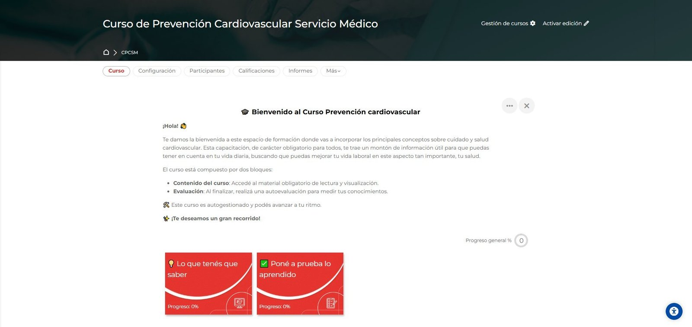
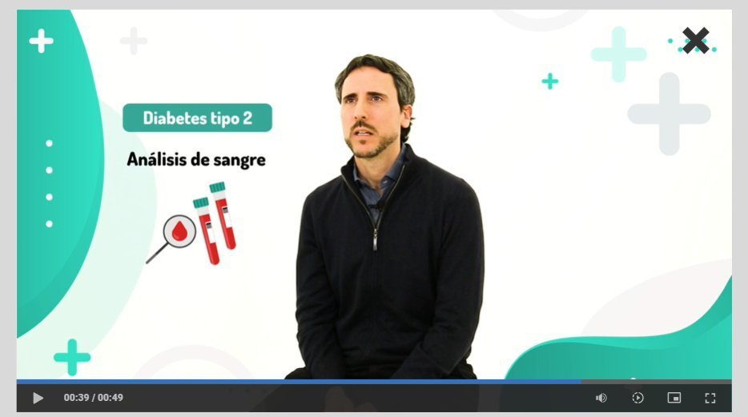
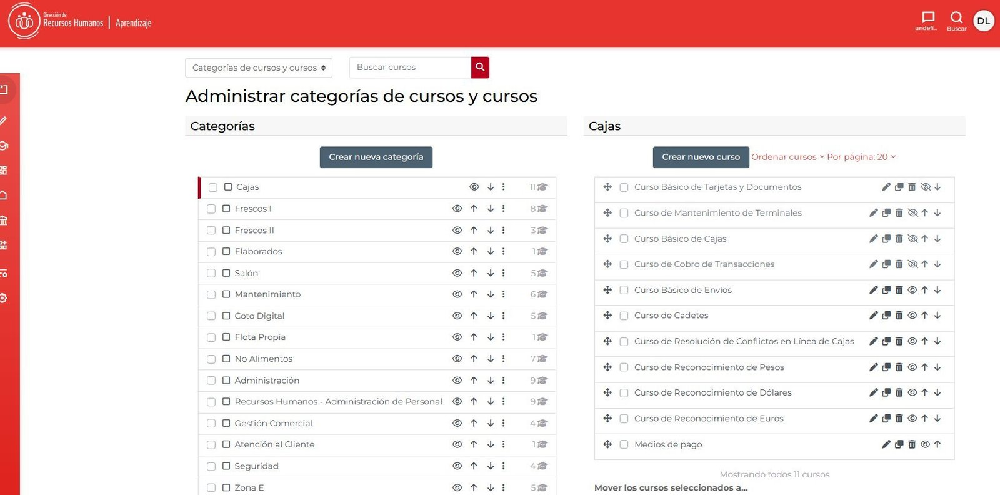
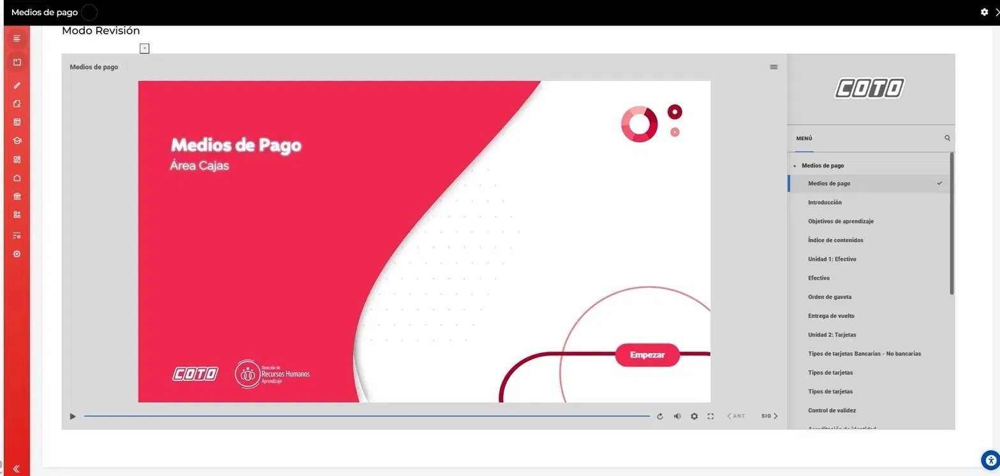
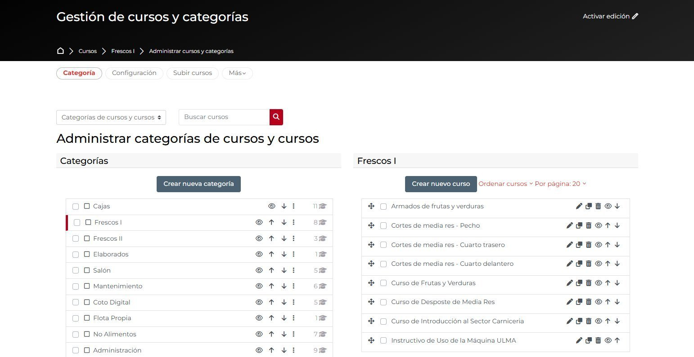

El método aplicado
a otras áreas.
Cada curso es un proyecto autocontenido con sus propias decisiones visuales y narrativas. Aquí algunos ejemplos representativos del sistema.


Prevención bienestar laboral
Curso para todo el personal sobre enfermedades no transmisibles, factores de riesgo y prevención cotidiana. Con video propio de cuarenta y nueve segundos integrando presentación a cámara y animación gráfica.


Sistema Cajas
Plan de formación integral del área. Once cursos articulados que cubren todo el recorrido del puesto, desde inducción hasta especializaciones. Medios de Pago es el primer curso del sistema producido bajo el nuevo estándar visual.


Sistema Frescos
Área de perecederos: sectores especializados de productos frescos. Ocho cursos con producción audiovisual filmada en planta — porque manipular alimentos frescos no se aprende con bullets, sino viendo cómo se hace.